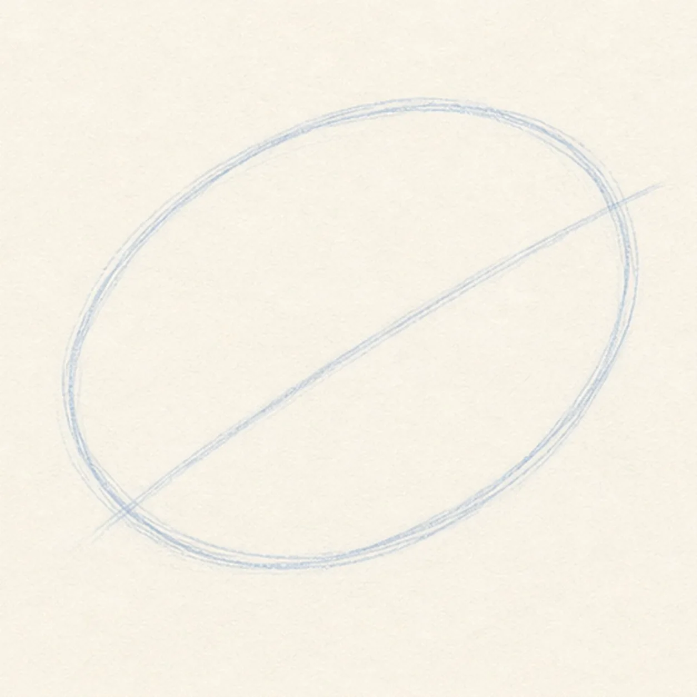
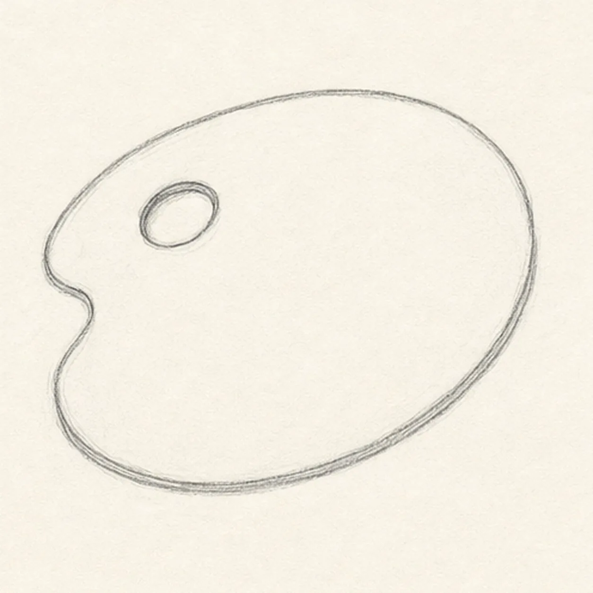
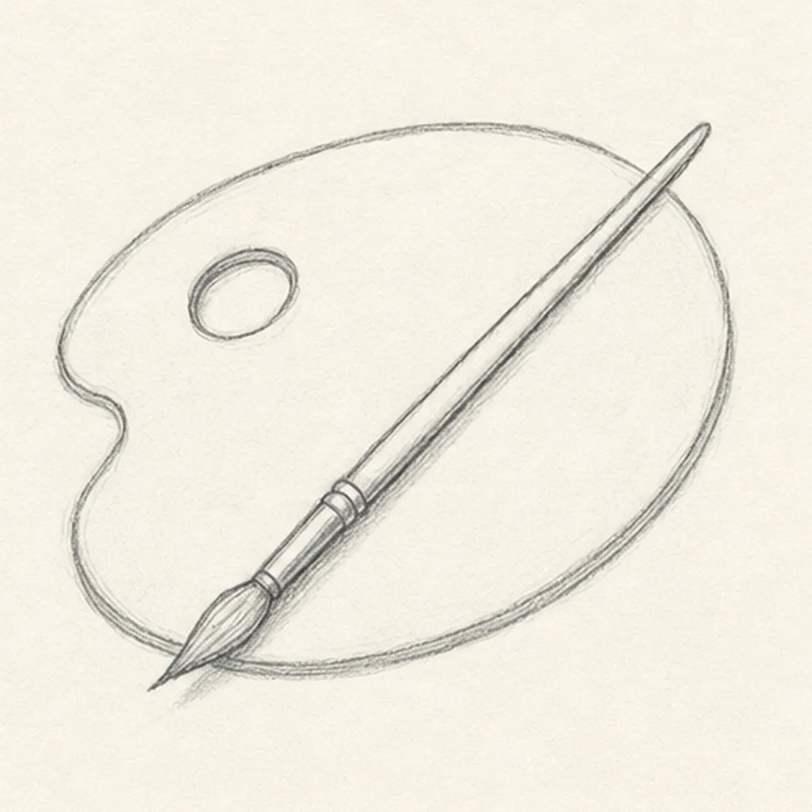
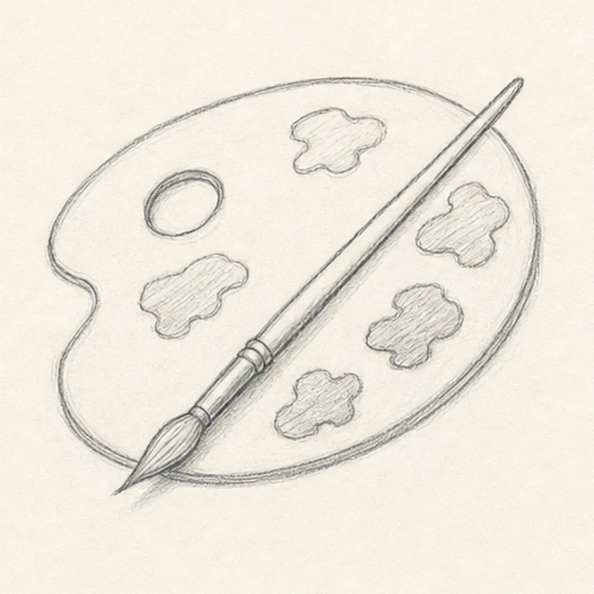
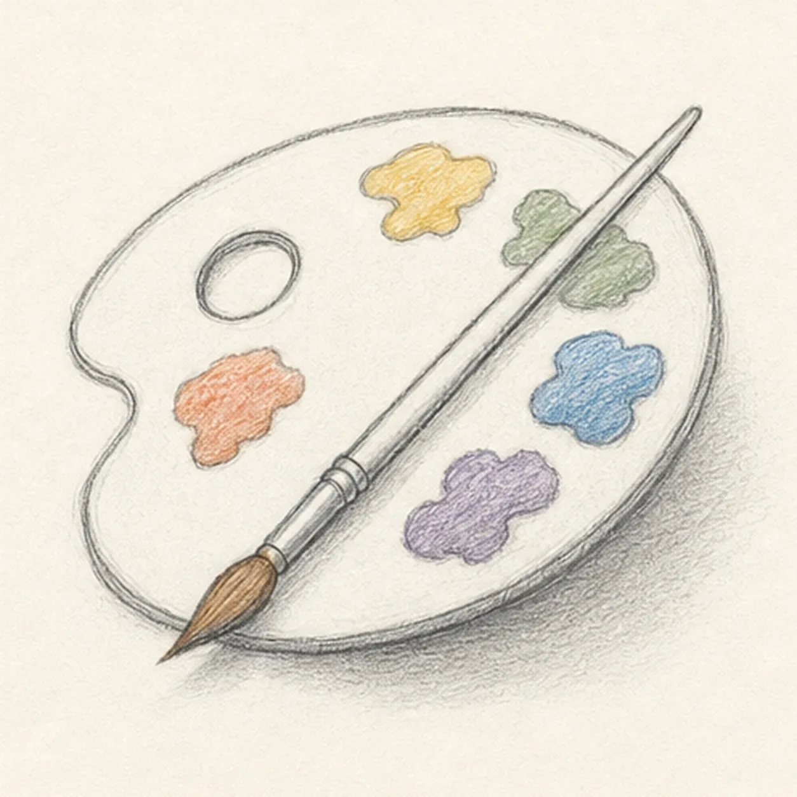

From the archive
Let's draw a paint palette
Treat this as one small practice round: build the subject lightly, notice the shapes, then darken only the lines that help the finished sketch.
-
01

Place the big guides
Draw a light tilted oval for the palette, then pull one diagonal guide line across it where the brush will sit.
Sketch tip: Keep the oval roomy. The paint dabs and thumb hole need space around the brush.
-
02

Shape the palette
Turn the oval into a handmade palette outline with a small inward bite on one side, then add a rounded thumb hole near the upper area.
Sketch tip: Draw the thumb hole as its own little oval before darkening it. That keeps it from becoming a random dent.
-
03

Lay in the brush
Build the brush along the diagonal guide with a narrow handle, a short metal ferrule, and a pointed bristle shape at the lower end.
Sketch tip: Let the brush overlap the palette cleanly. One confident diagonal makes the still life feel organized.
-
04

Add the paint dabs
Place several uneven paint blobs around the palette, keeping them clear of the thumb hole and leaving the brush on top.
Sketch tip: Make the dabs different sizes and shapes. Matching circles look more like buttons than paint.
-
05

Add color and shadow
Shade the paint dabs with loose colored pencil, warm the brush tip, and add a pale graphite shadow under the palette.
Sketch tip: Use light pressure so the pencil texture stays visible. The colors should decorate the sketch, not cover it.
-
06
Finish the keeper lines
Deepen the strongest palette edge, thumb hole, brush, paint dab outlines, color texture, and cast shadow without adding new tools or props.
Sketch tip: Stop while the palette still has open paper. A few lively paint spots are clearer than filling every blank space.